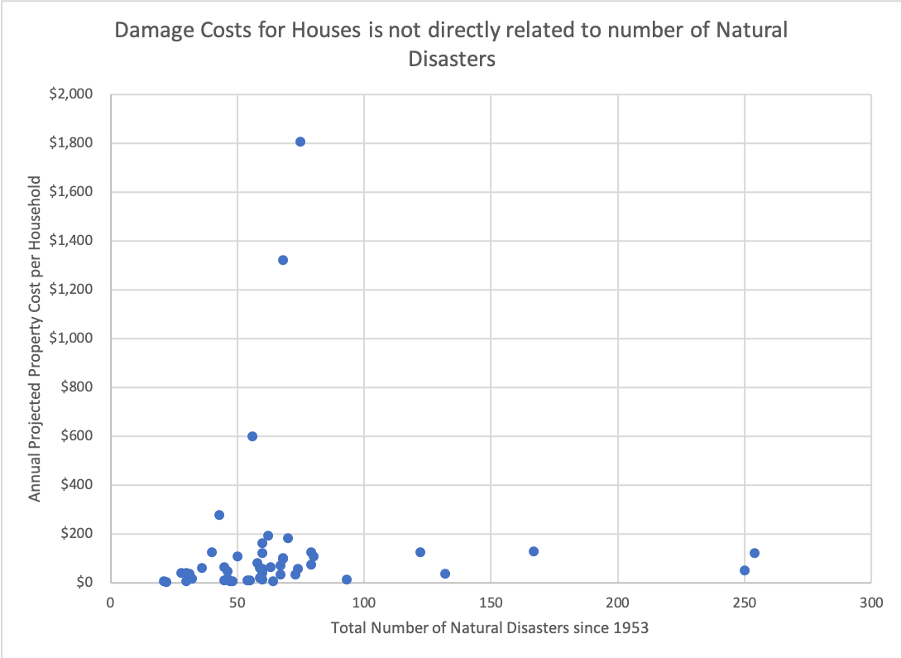

Brief: The assumption is that areas where natural disasters are more frequent, the cost of property damage is higher
Methodology: We looked at data from the US Census and other government resources to compare the number of natural disasters across different US States and compared the cost of Property Damage.

Analysis: There is no increase in increase property damage with an increase in the number of natural disasters
Interpretation: This may be because of increased adaptation and resilience measures in States more prone to natural disasters